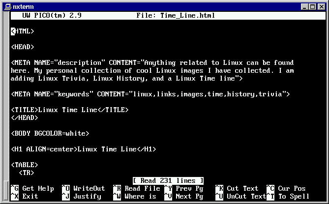

การใช้งาน pico
หากคุณมีความรู้สึกว่า vi มีความยุ่งยากในการใช้งาน และต้องการที่จะใช้เอดิเตอร์ที่มีลักษณะการใช้งานที่ง่ายกว่า pico น่าจะเป็นเอดิเตอร์ที่น่าสนใจสำหรับคุณได้
หากคุณเคยใช้ pine ในการส่งอีเมลล์ของคุณ คุณจะรู้สึกว่าการเขียนอีเมลล์ใน
pine จะมีลักษณะเดียวกันกับการใช้ pico
การเรียกใช้งาน pico สามารถทำได้ดังนี้
$ pico [ชื่อไฟล์]
เมื่อเรียกใช้ pico จะมีลักษณะเป็น full screen editor และมีการใช้งานที่ค่อนข้างง่าย เราสามารถใช้ปุ่มลูกศร ปุ่ม PgUp, PgDn ในการเลื่อนบรรทัดขึ้นลงได้ และ pico จะมีการแสดงปุ่มพิเศษที่ต้องใช้บ่อยๆทางด้านล่างของจอภาพ เช่นปุ่มบันทึกข้อมูลลงไฟล์ ปุ่มแสดงความช่วยเหลือ หรือ ปุ่มจบโปรแกรม
ของ pico]">
โดยปกติปุ่มฟังก์ชั่นพิเศษที่ใช้ใน pico จะมีวิธีการใช้งานในลักษณะของการกดปุ่มควบคู่กับปุ่ม Control เช่นปุ่มแสดงความช่วยเหลือ จะต้องกดปุ่ม Ctrl-G เมื่อลองกดปุ่มนี้แล้วก็จะปรากฎหน้าต่างแสดงความช่วยเหลือขึ้นมา การจะเลื่อนให้ pico แสดงข้อความช่วยเหลือหน้าถัดไปจะต้องกดปุ่ม Ctrl-V ถ้าจะดูหน้าย้อนกลับจะต้องกดปุ่ม Ctrl-Y และถ้าจะออกจากหน้าจอแสดงความช่วยเหลือก็ให้กดปุ่ม Ctrl-X คุณสามารถอ่านคำอธิบายความหมายของปุ่มพิเศษส่วนใหญ่ได้จากหน้าจอแสดงความช่วยเหลือนี้
ปุ่มฟังก์ชั่นพิเศษอื่นๆที่น่าสนใจใน pico
Ctrl-X ออกจากโปรแกรม pico (ถ้ามีการแก้ไขจะถามว่าบันทึกไฟล์หรือไม่)
Ctrl-O บันทึกไฟล์
Ctrl-J เชื่อมบรรทัดอื่นให้เป็นบรรทัดเดียวกัน
Ctrl-R อ่านไฟล์เข้ามาเป็นส่วนหนึ่งของข้อความที่กำลังแก้ไข
Ctrl-W ค้นหาคำที่ต้องการ
Ctrl-^ ระบายแถบสีเลือกข้อความที่ต้องการ
Ctrl-K ตัดข้อความที่เลือกไว้ นำไปเก็บในบัฟเฟอร์
Ctrl-U นำข้อความที่อยู่ในบัฟเฟอร์ออกมาใส่กลับไปในข้อความ
Ctrl-C บอกตำแหน่งปัจจุบันของเคอร์เซอร์
Ctrl-T เรียกตัวตรวจสอบการสะกดคำ
HTML developed by Kaiwal Development Team (kaiwal@geocities.com)